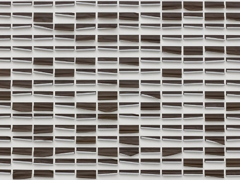

The Art Times
Your Leading Source of Art Coverage


Jac Leirner - Institutional Ghost
Exhibition opens 14 February - 05 June 2017
Courtyard Galleries, East Ground.
Considered one of Brazil’s most important contemporary artists, this solo exhibition from Jac Leirner comprises of exciting recent and new work made in response to the architecture of IMMA. Leirner works across disciplines including sculpture, painting, installation and works on paper.
Since the mid-1980s, Leirner has collected the temporary and incidental products of everyday life, tapping into what she has described as the ‘infinity of materials’. Stickers, rulers, plastic bags, business cards, cigarette ends and even bank notes make their appearance in her work, removed but not entirely dislocated from their original function. By repurposing these everyday materials into visually compelling sculptures and installations, Leirner creates new and unexpected associations that provide a sharp statement on the unfolding of art in recent decades.
Image: Jac Leirner, Skin (Rizla Liquorice), 2013. Cigarette rolling papers (684 units). Image courtesy of the artist and White Cube Gallery, London.
Article sourced from Visual Arts Ireland